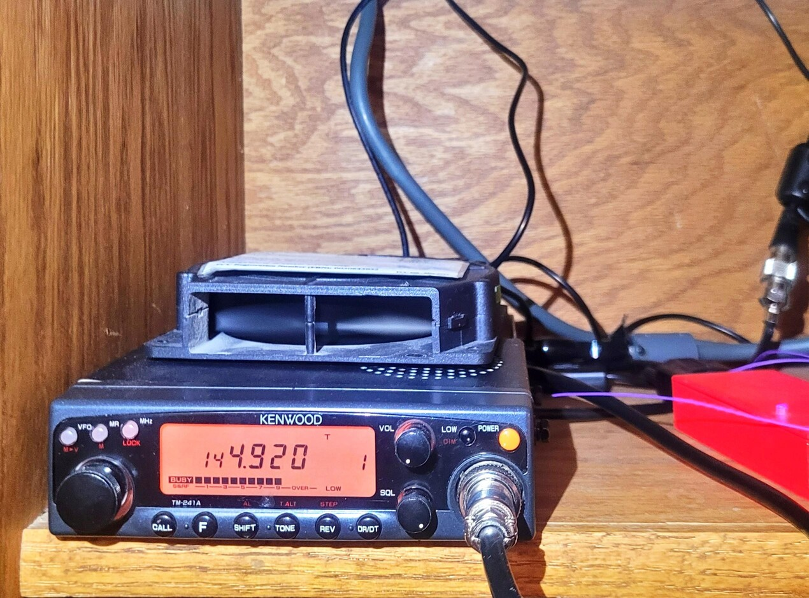

The History of the KI5TLZ Allstar Node and Repeater
What is Allstar?
Allstar leverages Voice Over IP (VoIP) to extend the range of line-of-sight radios via the internet, effectively bridging local and global radio communications.
Initial Build
To address the lack of Allstar nodes in my area, I constructed my own using a 144MHz mobile FM transceiver (Kenwood TM-241a), a Raspberry Pi 4B, and an RA-25 soundcard, sourced after extensive research.
Connecting the transceiver to the soundcard involved creating a custom cable, incorporating modifications to support push-to-talk and signal detection (COS). The setup, combined with AllstarLink software, allowed for global connections via a simple walkie-talkie.
Node V2: Enhancements
To mitigate interference issues in my complex, I transitioned to a Motorola CDM 1550LS+ for the 70cm band. This radio provided better noise handling and a straightforward COS interface, enhancing reliability and functionality.
Looking ahead, I plan to expand the setup with additional radios and a duplexer for a more robust repeater system.
Connection Guide
Refer to the KIT5LZ Allstar User Guide for current node information and connection details. The node is open for public use!